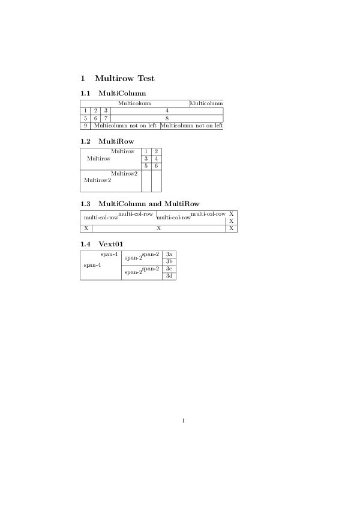

Multirow example¶
This example shows how multirow and multicolumns can be used.
The code¶
from pylatex import Document, Section, Subsection, Tabular, MultiColumn,\
MultiRow
doc = Document("multirow")
section = Section('Multirow Test')
test1 = Subsection('MultiColumn')
test2 = Subsection('MultiRow')
test3 = Subsection('MultiColumn and MultiRow')
test4 = Subsection('Vext01')
table1 = Tabular('|c|c|c|c|')
table1.add_hline()
table1.add_row((MultiColumn(4, '|c|', 'Multicolumn'),))
table1.add_hline()
table1.add_row((1, 2, 3, 4))
table1.add_hline()
table1.add_row((5, 6, 7, 8))
table1.add_hline()
row_cells = ('9', MultiColumn(3, '|c|', 'Multicolumn not on left'))
table1.add_row(row_cells)
table1.add_hline()
table2 = Tabular('|c|c|c|')
table2.add_hline()
table2.add_row((MultiRow(3, '*', 'Multirow'), 1, 2))
table2.add_hline(2, 3)
table2.add_row(('', 3, 4))
table2.add_hline(2, 3)
table2.add_row(('', 5, 6))
table2.add_hline()
table2.add_row((MultiRow(3, '*', 'Multirow2'), '', ''))
table2.add_empty_row()
table2.add_empty_row()
table2.add_hline()
table3 = Tabular('|c|c|c|')
table3.add_hline()
table3.add_row((MultiColumn(2, '|c|', MultiRow(2, '*', 'multi-col-row')), 'X'))
table3.add_row((MultiColumn(2, '|c|', ''), 'X'))
table3.add_hline()
table3.add_row(('X', 'X', 'X'))
table3.add_hline()
table4 = Tabular('|c|c|c|')
table4.add_hline()
col1_cell = MultiRow(4, '*', 'span-4')
col2_cell = MultiRow(2, '*', 'span-2')
table4.add_row((col1_cell, col2_cell, '3a'))
table4.add_hline(3)
table4.add_row(('', '', '3b'))
table4.add_hline(2)
table4.add_row(('', col2_cell, '3c'))
table4.add_hline(3)
table4.add_row(('', '', '3d'))
table4.add_hline()
test1.append(table1)
test2.append(table2)
test3.append(table3)
test4.append(table4)
section.append(test1)
section.append(test2)
section.append(test3)
section.append(test4)
doc.append(section)
doc.generate_pdf(clean=False)
The generated pdfs¶

multirow.pdf